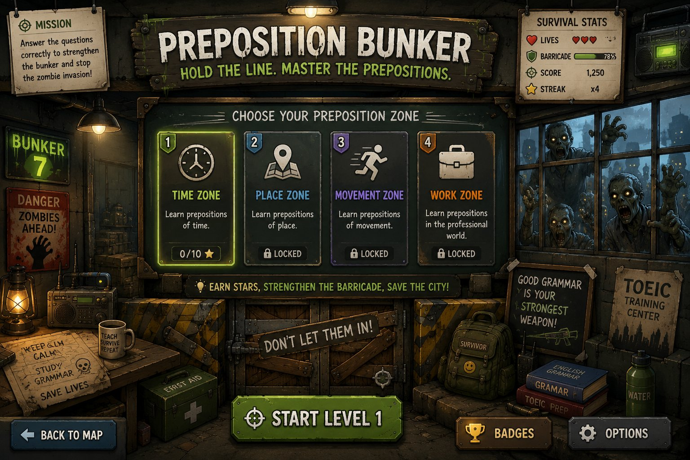
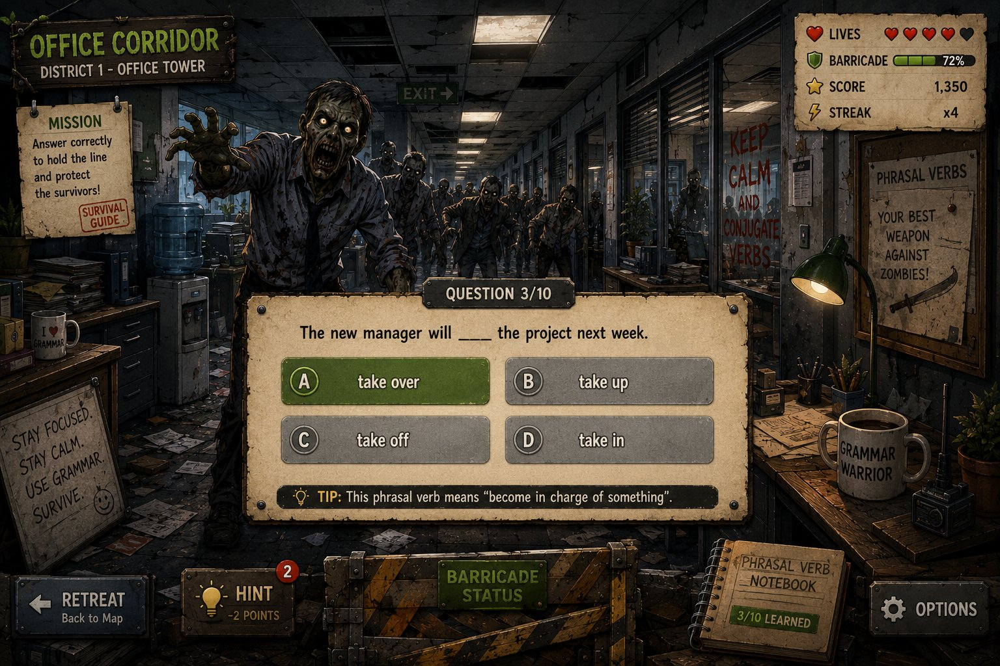

Preposition Bunker
Choisis ta zone
Entraîne-toi zone par zone. Une zone terminée débloque la suivante. Le mode Survival, lui, exige les 40 questions dans la même partie.
Survival Guide
How to Play
- En Survival, termine Time, Place, Movement et Work dans la même partie : 40 questions.
- Une bonne réponse : +10 points et barricade +5%.
- Une mauvaise réponse : −1 vie et barricade −20%.
- Un indice coûte jusqu'à 2 points selon ton score disponible.
- Chaque série de 3 bonnes réponses donne +5 points.
- Le mode Choose Grammar Zone sert à s'entraîner sans valider une victoire Survival.
- Tu perds si tes vies ou ta barricade tombent à zéro.

Lives
Barricade100%
Score0
Streakx0
💡 Indice :
The zombies are in retreat!
City Saved!
Tu as survécu aux 40 questions de la campagne.
The zombies broke through
Game Over
La ville a été envahie… mais chaque survivant apprend de ses erreurs.
Preposition Notebook · Review
Review Mistakes
Relis chaque erreur : ta réponse, la bonne réponse et la règle.